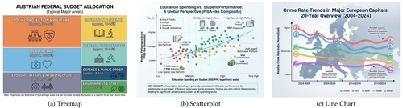
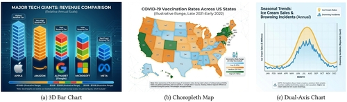

D1 · Story Frame
AI generation systems have been trained to create data visualizations by being fed real, factual data set visualizations. When a prompt is entered to generate a data table, the AI system spits out something resembling a table, graph, or chart, with information that misrepresents the real data. Mandy Keck and Andreas Stöckl tested 20 different categories with 5 variations per prompt to “asses consistency and variation in misleading patterns” (Keck & Stöckl, 2026). They found in their research that 99 out of 100 generated infographics “contained at least one misleading element” (Keck & Stöckl, 2026).
D2 · Editorial Figures


D3 · Accessible Data Table
| Categories | Choropleth Map | Line Chart | Area Chart | Bar Chart | Scatterplot | Pie Chart | Stacked Area | Flow Chart |
|---|---|---|---|---|---|---|---|---|
| Garbage-In | 10 | 9 | 5 | 8 | 4 | 4 | 1 | 2 |
| Lie With Statistics | 2 | 7 | ||||||
| Choice of Axis | 7 | 7 | 6 | 1 | 3 | 1 | ||
| Choice of Chart | 1 | 1 | 5 | 1 | ||||
| Color Mess | 10 | 3 | 0 | 2 | 1 | 1 | ||
| Incomplete Chart | 1 | 4 | 2 | 3 | 3 | 1 | 2 | |
| Inconsistency | 20 | 7 | 7 | 9 | 3 | 2 | 1 | |
| Chaotic Canvas | 6 | 1 | 1 | 1 | ||||
| Visual Illusion | 1 | 2 | 2 | 3 | 2 | 2 | ||
| Hidden Information | 4 | 4 | 2 | 6 | ||||
| Power of Words | 1 | 2 | 1 | 1 | 5 | 1 | ||
| False Linkage | 2 | 4 |
Partial analysis of AI-generated charts: The data is split by category of error of data produced and by type of infographic generated. This is not the full chart produced in the Keck & Stöckl article.
D4 · Responsive SVG
D5-D6 · System and Documentation
Extend Module 1 patterns, then link your sources, asset credits/licenses, test record, transformation notes, and AI disclosure.